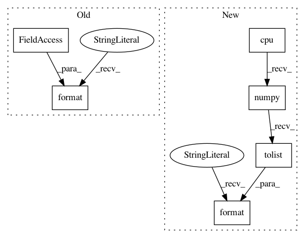

efc3a6a1ea4408055d273967198fcc0530bee7fa,pyprob/distributions/truncated_normal.py,TruncatedNormal,__repr__,#TruncatedNormal#,37
Before Change
super().__init__(name="TruncatedNormal", address_suffix="TruncatedNormal", batch_shape=batch_shape, event_shape=event_shape)
def __repr__(self):
return "TruncatedNormal(mean_non_truncated:{}, stddev_non_truncated:{}, low:{}, high:{})".format(self._mean_non_truncated, self._stddev_non_truncated, self._low, self._high)
def log_prob(self, value, sum=False):
value = util.to_tensor(value)
// TODO: With the following handling of low and high bounds, the derivative is not correct for a value outside the truncation domain
After Change
super().__init__(name="TruncatedNormal", address_suffix="TruncatedNormal", batch_shape=batch_shape, event_shape=event_shape)
def __repr__(self):
return "TruncatedNormal(mean_non_truncated={}, stddev_non_truncated={}, low={}, high={})".format(self.mean_non_truncated.cpu().numpy().tolist(), self.stddev_non_truncated.cpu().numpy().tolist(), self.low.cpu().numpy().tolist(), self.high.cpu().numpy().tolist())
def log_prob(self, value, sum=False):
value = util.to_tensor(value)
// TODO: With the following handling of low and high bounds, the derivative is not correct for a value outside the truncation domain
In pattern: SUPERPATTERN
Frequency: 3
Non-data size: 6
Instances
Project Name: pyprob/pyprob
Commit Name: efc3a6a1ea4408055d273967198fcc0530bee7fa
Time: 2020-07-26
Author: atilimgunes.baydin@gmail.com
File Name: pyprob/distributions/truncated_normal.py
Class Name: TruncatedNormal
Method Name: __repr__
Project Name: pyprob/pyprob
Commit Name: efc3a6a1ea4408055d273967198fcc0530bee7fa
Time: 2020-07-26
Author: atilimgunes.baydin@gmail.com
File Name: pyprob/distributions/log_normal.py
Class Name: LogNormal
Method Name: __repr__
Project Name: pyprob/pyprob
Commit Name: efc3a6a1ea4408055d273967198fcc0530bee7fa
Time: 2020-07-26
Author: atilimgunes.baydin@gmail.com
File Name: pyprob/distributions/categorical.py
Class Name: Categorical
Method Name: __repr__